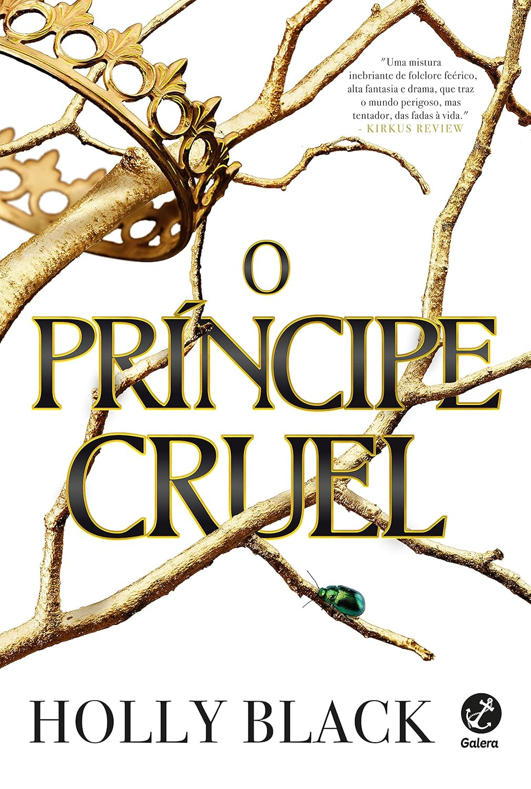
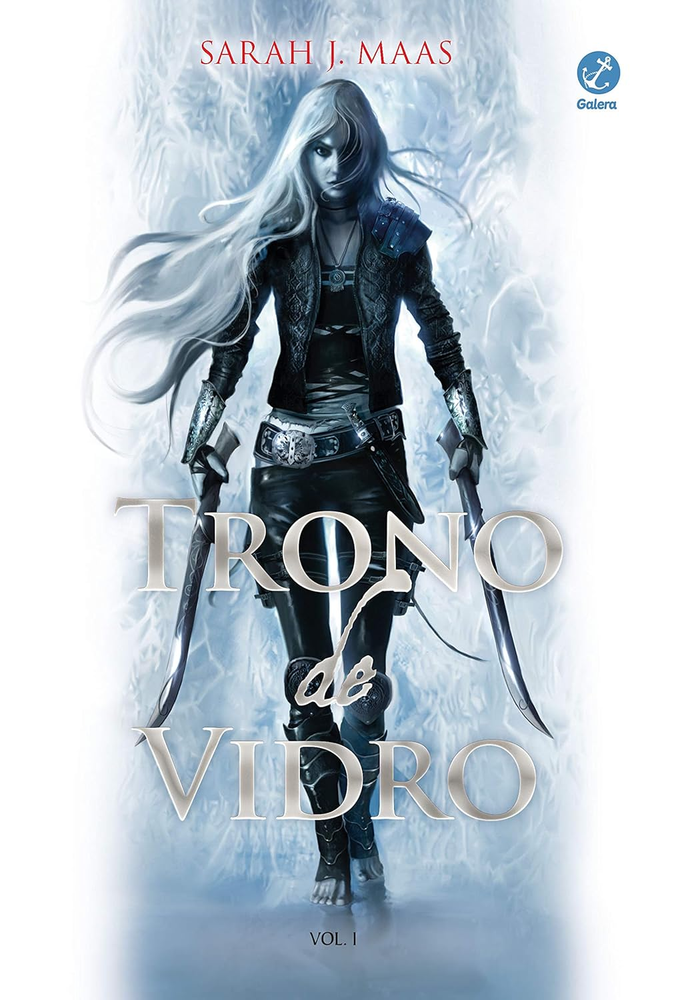
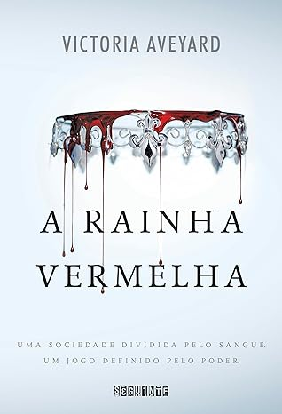
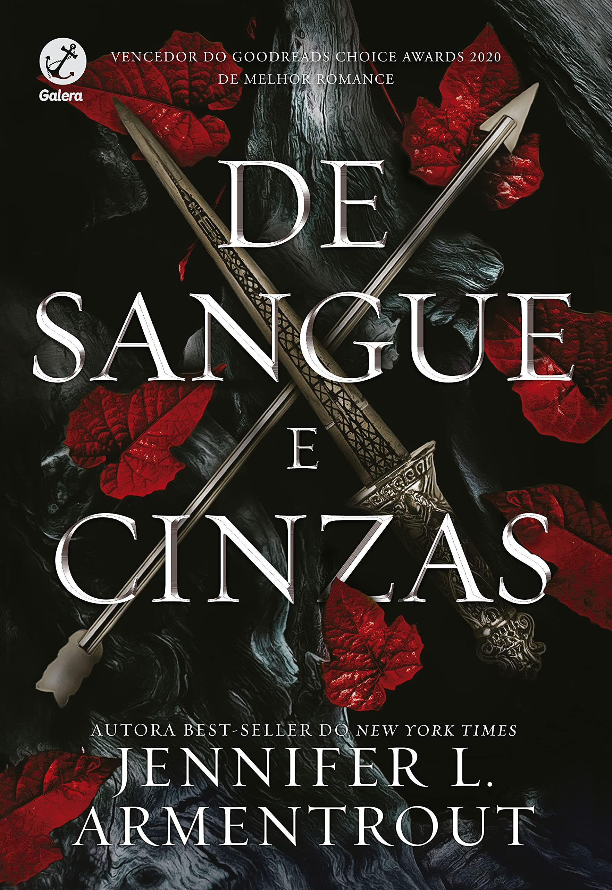

O Príncipe Cruel
Jude tinha apenas sete anos quando seus pais foram brutalmente assasinados e ela e as irmãs
levadas para viver no
traiçoeiro Reino das Fadas. Dez anos depois, tudo o que Jude quer é se encaixar, mesmo sendo
uma garota mortal.
Mas todos os feéricos parecem desprezar os humanos... Especialmente o príncipe Cardan, o
mais jovem e mais perverso
dos filhos do Grande Rei de Elfhame. Para conquistar o tão desejado lugar na Corte, Jude
precisa desafiar o príncipe
- e enfrentar as consequências do ato.
Learn More

Trono de Vidro
Aos 18 anos uma prisioneira está cumprindo sua sentença. Ela é uma assassina, e a melhor de
Adarlan. Aprisionada e
fraca, ela está quase perdendo as esperanças, a sentença de morte é iminente, mas a jovem
recebe uma proposta
inesperada: representar o príncipe em uma competição com lutando contra os mais habilidosos
assassinos e larápios
do reino. Mas ela não diz sim apenas para matar, seu foco é obter sua liberdade de volta.
Learn More

A Rainha Vermelha
O mundo de Mare Barrow é dividido pelo sangue: vermelho ou prateado. Mare e sua família são
vermelhos: plebeus,
humildes, destinados a servir uma elite prateada cujos poderes sobrenaturais os tornam quase
deuses. Mare rouba
o que pode para ajudar sua família a sobreviver e não tem esperanças de escapar do vilarejo
miserável onde mora.
Entretanto, numa reviravolta do destino, ela consegue um emprego no palácio real, onde, em
frente ao rei e a toda
a nobreza, descobre que tem um poder misterioso… Mas como isso seria possível, se seu sangue
é vermelho? Em meio
às intrigas dos nobres prateados, as ações da garota vão desencadear uma dança violenta e
fatal, que colocará
príncipe contra príncipe - e Mare contra seu próprio coração.
Learn More

De Sangue e Cinzas
O mundo de Mare Barrow é dividido pelo sangue: vermelho ou prateado. Mare e sua família são
vermelhos:
plebeus, humildes, destinados a servir uma elite prateada cujos poderes sobrenaturais os
tornam quase
deuses. Mare rouba o que pode para ajudar sua família a sobreviver e não tem esperanças de
escapar do
vilarejo miserável onde mora. Entretanto, numa reviravolta do destino, ela consegue um
emprego no palácio
real, onde, em frente ao rei e a toda a nobreza, descobre que tem um poder misterioso… Mas
como isso seria
possível, se seu sangue é vermelho? Em meio às intrigas dos nobres prateados, as ações da
garota vão
desencadear uma dança violenta e fatal, que colocará príncipe contra príncipe - e Mare
contra seu próprio coração..
Learn More